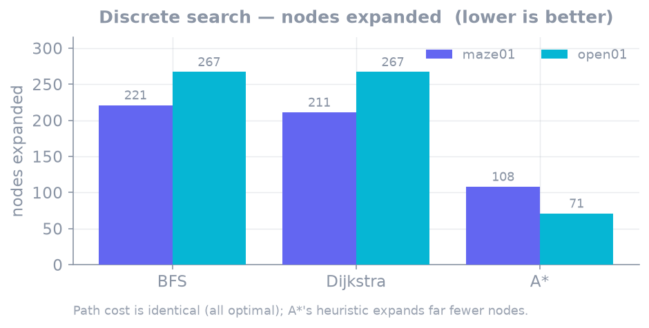
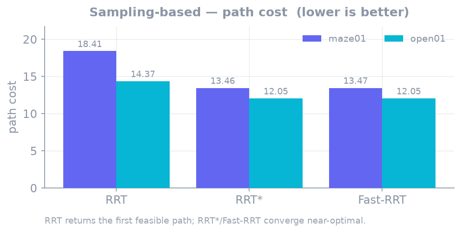
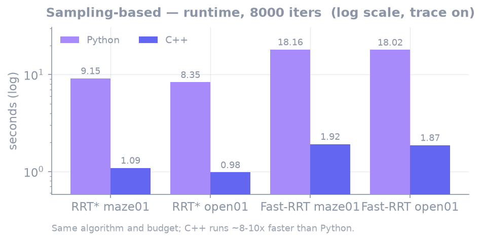

Benchmarks¶
tools/bench/run_matrix.py runs the (scenario × algorithm) combinations as per-language demo
subprocesses, collecting success, path cost, expanded/samples, and runtime, and writes a report.
python tools/bench/run_matrix.py --out out/report.md
Environment: Apple Silicon macOS, Python 3 / C++20 Release. seed = 1, parameters at the
configs/global_planning/ defaults. Maps: maze01 (narrow-corridor maze) and open01 (open field).
Note
Runtimes were measured with trace emission on (demo mode). For the sampling algorithms, which emit hundreds of thousands of events, trace I/O dominates, so read them as relative comparisons between algorithms/languages, not absolute numbers.
Per-group comparison¶
Even within one category, the axis of comparison differs. Discrete search (BFS·Dijkstra·A*) searches the grid optimally, so path cost is identical and what matters is how few nodes it expands. Sampling (RRT·RRT*·Fast-RRT) searches continuous space probabilistically, so what matters is path quality (cost) and convergence. Each group is therefore compared on a different metric. (Local planning and Multi-agent are planned — groups appear here once implemented.)
Discrete search — BFS vs Dijkstra vs A*¶
All three return the same optimal path (maze01 28.728, open01 25.213). The difference is how many nodes they expand to find it.

| algorithm | maze01 expanded | open01 expanded | path cost | Python / C++ runtime |
|---|---|---|---|---|
| BFS | 221 | 267 | optimal (same) | 1.7 / 1.0 ms |
| Dijkstra | 211 | 267 | optimal (same) | 2.4 / 1.0 ms |
| A* | 108 | 71 | optimal (same) | 1.7 / 0.8 ms |
- A*'s heuristic clearly pays off — half the expansions of Dijkstra on maze01 (108 vs 211) and under a quarter on open01 (71 vs 267). It finds the same optimum with far less search.
- BFS and Dijkstra have no heuristic and grow the frontier evenly, so their expansion counts are similar. (BFS matching the optimum here is a coincidence of this map — see BFS.)
Sampling-based — RRT vs RRT* vs Fast-RRT¶
RRT stops at the first feasible solution; RRT*/Fast-RRT spend the full 8,000-iteration budget improving the path. What matters is the final path cost and its shape.

| algorithm | maze01 cost | open01 cost | budget | maze01 waypoints |
|---|---|---|---|---|
| RRT | 18.41 | 14.37 | first solution | 39 |
| RRT* | 13.46 | 12.05 | 8,000 iters | 18 |
| Fast-RRT | 13.47 | 12.05 | 8,000 iters | 5 |
- RRT is fastest (hundreds of samples, a few ms) but its path is 19–37% longer than RRT* (feasible-but-suboptimal).
- RRT* and Fast-RRT converge near-optimal, so their costs are essentially equal. The difference is path shape — Fast-RRT's shortcut cuts waypoints to under a third, giving a path that is easy to follow without post-processing.
Language performance — C++ vs Python¶
For the same algorithm and budget the result quality is equivalent (sampling costs differ by 0.1–0.6% due to different random streams) while C++ runs 8–10× faster. The discrete algorithms are deterministic and produce byte-identical results across languages.

Full matrix (raw)¶
maze01¶
| algorithm | path cost | expanded / samples | Python runtime | C++ runtime |
|---|---|---|---|---|
| BFS | 28.728 | 221 expanded | 1.7 ms | 1.0 ms |
| Dijkstra | 28.728 | 211 expanded | 2.4 ms | 1.0 ms |
| A* | 28.728 | 108 expanded | 1.7 ms | 0.8 ms |
| RRT | 18.414 (py) / 16.888 (cpp) | 229 / 246 samples | 3.4 ms | 0.4 ms |
| RRT* | 13.458 / 13.471 | 8,000 samples | 9.15 s | 1.09 s |
| Fast-RRT | 13.467 / 13.544 | 8,000 samples | 18.16 s | 1.92 s |
open01¶
| algorithm | path cost | expanded / samples | Python runtime | C++ runtime |
|---|---|---|---|---|
| BFS | 25.213 | 267 expanded | 2.0 ms | 0.4 ms |
| Dijkstra | 25.213 | 267 expanded | 2.9 ms | 0.6 ms |
| A* | 25.213 | 71 expanded | 1.3 ms | 0.3 ms |
| RRT | 14.371 / 13.920 | 177 / 229 samples | 2.6 ms | 0.4 ms |
| RRT* | 12.047 / 12.048 | 8,000 samples | 8.35 s | 0.98 s |
| Fast-RRT | 12.048 / 12.049 | 8,000 samples | 18.02 s | 1.87 s |
How the matrix runner works¶
- Runs every yaml in
maps/scenarios/× algorithm. Adding a map/scenario includes it automatically. - Checks the planner's
required_capabilities()against the map's capabilities, recording an incompatible combination as "incompatible" rather than an error (e.g.GraphMap× RRT). - Calls each language's demo CLI as a subprocess and collects the single-line JSON metric from stdout into a shared format, so the runner is unchanged as languages are added.